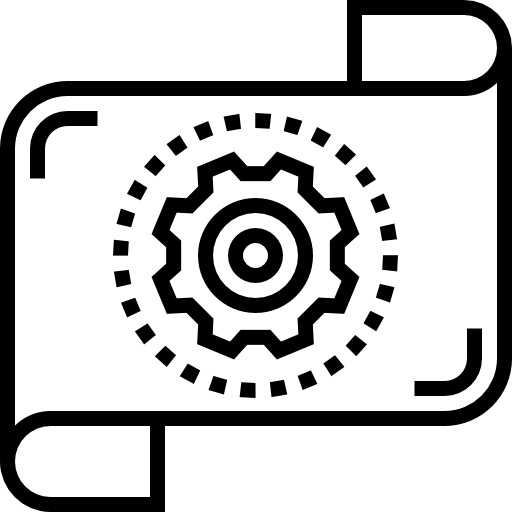

Processos Mecânicos e eletrônicos
Contate agora mesmo-
Projeto de Máquinas
Desenvolvemos projetos de máquinas sob medida para automatizar tarefas manuais e otimizar processos mecânicos, reduzindo falhas humanas e garantindo excelência operacional. Aumente a eficiência da sua produção com soluções que elevam a qualidade e geram resultados concretos.
-

Prototipagem
A prototipagem permite criar e testar novos produtos ou mecanismos em um ambiente controlado, seguro e flexível. É uma etapa essencial para validar conceitos, identificar melhorias e corrigir falhas antes da produção final, garantindo um desenvolvimento mais eficiente, preciso e alinhado às exigências do projeto.
-

Eficiência Energética
A eficiência energética é uma estratégia essencial para reduzir custos, otimizar recursos e direcionar investimentos de forma inteligente. Além de refletir inovação e compromisso ambiental, representa uma necessidade real para a sustentabilidade e a competitividade econômica das empresas.
-

Detalhamento
O detalhamento técnico é realizado por meio de softwares CAD de última geração, como SolidWorks e Autodesk Inventor, permitindo a criação precisa de peças em 2D e 3D. Esse processo garante total fidelidade às especificações técnicas, oferecendo segurança, eficiência e assertividade no desenvolvimento de cada componente.